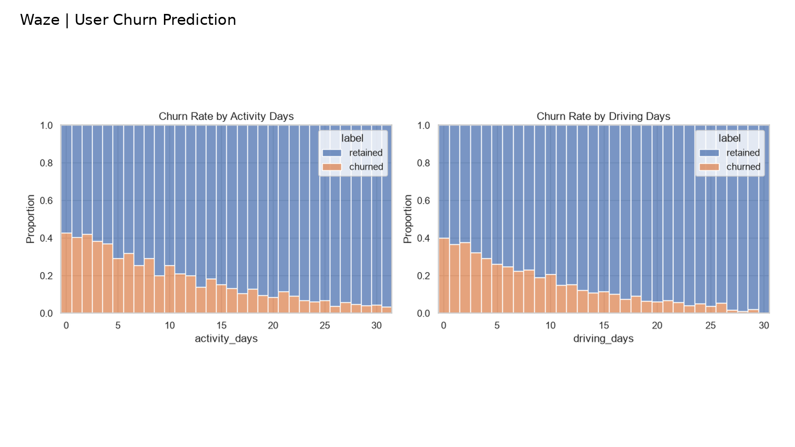
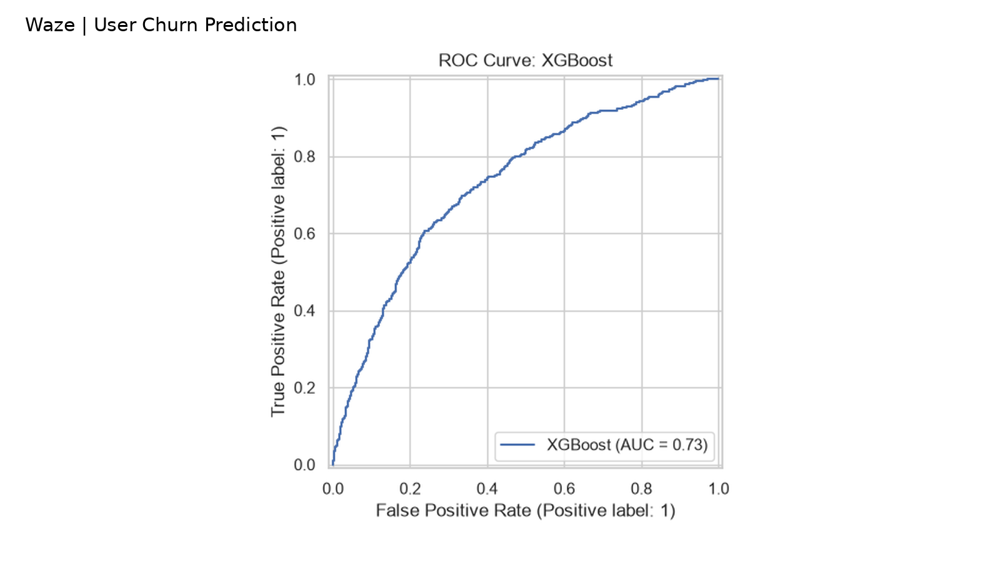
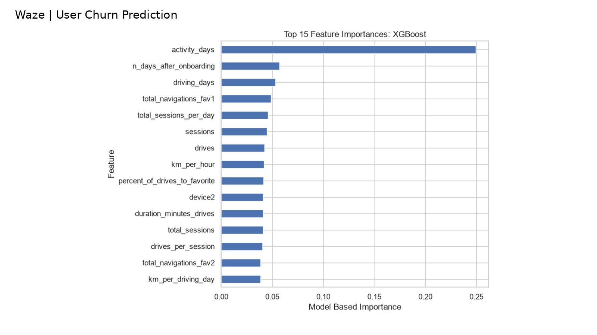

02 · Retention case study
Waze User Churn
Churn prediction focused on identifying users at higher risk of leaving, with validation-only threshold tuning.
14,299labeled users
17.74%churn rate
52.47%test recall @ 0.223
0.73test ROC AUC
01 · Analysis
Threshold choice changed the business trade-off.
The workflow used behavioral features, stratified train, validation, and test splits, model comparison, and threshold tuning using validation data only. The 0.223 threshold is an example operating point, not a production recommendation.
Key findingChanging the threshold made it possible to catch more potential churners, but that came with more false positives. That trade-off is the business decision the model helps expose.



02 · Model strategy
How the analysis turned into a usable model.
Model choice was tied to the question, the available data, and the evaluation metric. The result is presented with its trade-offs instead of treating one score as the whole story.
Logistic RegressionBaseline model for comparison.
XGBoostSelected on validation recall.
Threshold 0.22375.00% accuracy · 52.47% recall · 35.95% precision · 42.66% F1
03 · Final conclusionProblemThe business needs to identify users worth targeting before they leave. Recommended actionUse risk scores to prioritize outreach, then test whether the intervention actually reduces churn. Important noteChoose the operating threshold from real intervention costs and validate it on fresh data.
What a client could actually use from this work.
The model can turn a broad churn problem into a prioritized retention list, but the final threshold should come from the real cost of contacting users versus missing churners.
04 · Recommendations & notes
What I would do next.
Recommended next steps
- Use risk scores to prioritize outreach, then test whether the intervention actually reduces churn.
- Validate the recommendation with fresh data and a clear business success metric.
Important note
The threshold was tuned on validation data only. It is deliberately presented as an example operating point rather than a universal business rule.